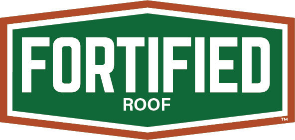

Build stronger. Resist more. Save on insurance. FORTIFIED roofs are engineered to withstand the worst Mississippi and Alabama weather.
FORTIFIED is a voluntary construction and re-roofing program developed by the Insurance Institute for Business & Home Safety (IBHS). A FORTIFIED Roof is built to resist severe weather — including high winds, hail, hurricanes, and tornadoes — beyond minimum building code requirements.
In Mississippi and Alabama, a FORTIFIED designation can qualify you for significant insurance discounts, especially on the Gulf Coast where hurricane risk is highest.
Durden Roof Care is trained and experienced in FORTIFIED roofing standards.
A FORTIFIED Roof strengthens your home against wind, rain, and hail by protecting the most vulnerable parts of your roofing system. The certificate verifies that your roof has been inspected and meets the official IBHS FORTIFIED standards — reducing the potential for water intrusion by up to 95%.
Certain insurers offer discounts of up to 55% off the wind portion of insurance policies for FORTIFIED homes. Some states also offer a tax deduction. Speak with your insurance agent for details on savings and eligibility.
Engineered to resist winds up to 130 mph and reduce water intrusion from wind-driven rain, hail, and hurricanes — reducing potential water damage by up to 95%.
A FORTIFIED designation can increase the resale value of a home by up to 7% and adds measurable marketability to your property.
One of the strengths of the FORTIFIED program is the requirement that each property be verified by a trained, independent, third-party FORTIFIED Evaluator. Every FORTIFIED Home project must have a certified Evaluator involved to collect the needed data and submit the project to IBHS for designation. Evaluators are the only professionals who can help a homeowner earn a FORTIFIED designation.
Jason Sanford — IBHS-Certified Fortification Evaluator
Phone: (228) 861-4896
Jason guides homeowners through FORTIFIED requirements, inspections, and certificate questions.
We'll walk you through the process and help you qualify for insurance discounts.
Get a FORTIFIED Quote